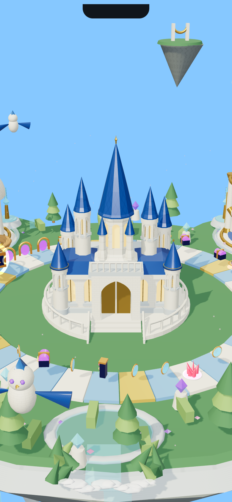

Island 002 · Palace checkpointIsland 002 · Palace checkpoint
Actual V1, current interactive V2 palace, and the approved goal. The Blender palace and glass conservatory have passed their shape reviews. The remaining landmarks, cliffs and landscape are still in production; finishing and complete-island validation are pending.
Open interactive work in progress · Original island before / goal comparison
V1 · actual runtime Current V2 · actual runtime, shape approved
Current V2 · actual runtime, shape approved
Approved goal · generated concept